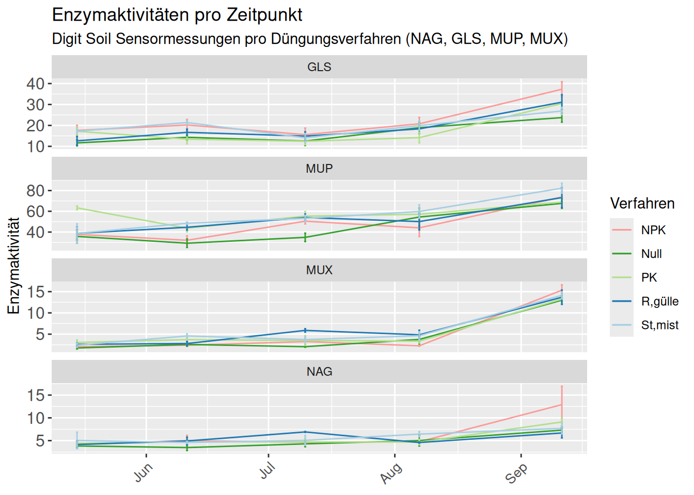
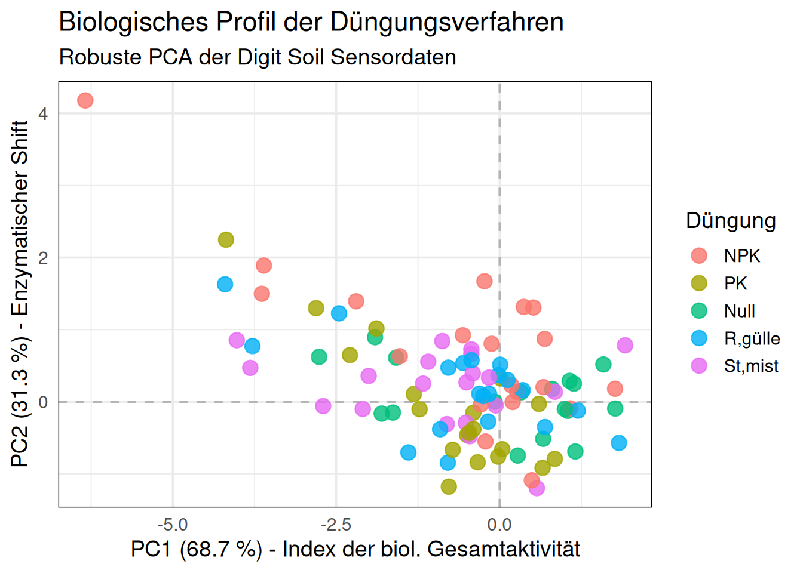
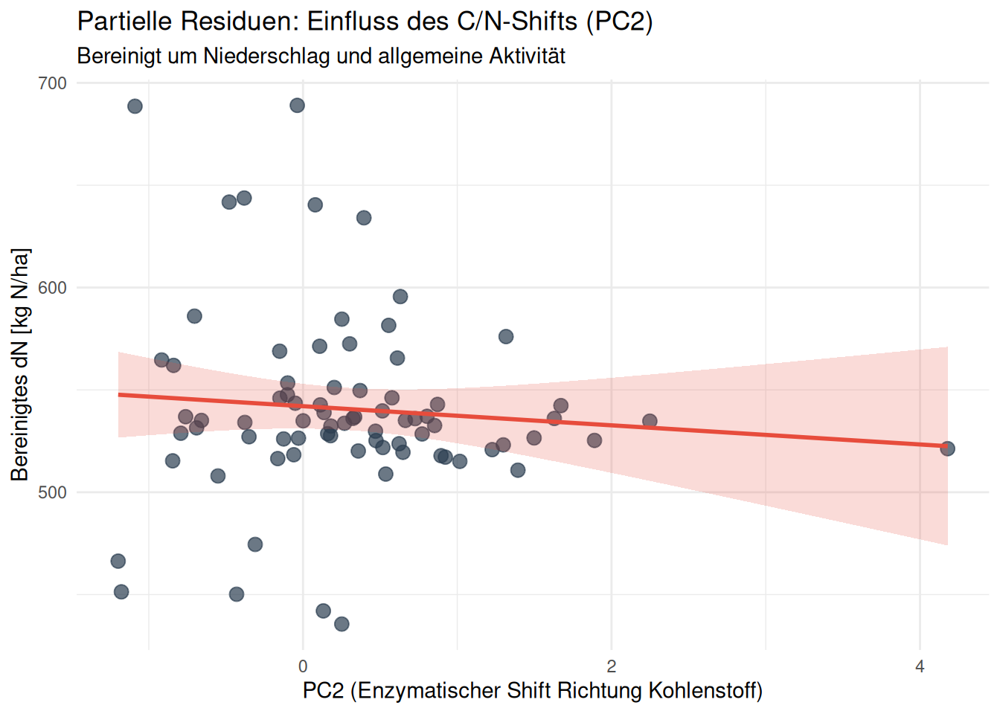

1 Langzeitversuch DEMO
2 1. Hintergrund und Methodik
Der Langzeitversuch DEMO untersucht seit 1989 die Auswirkungen unterschiedlicher organischer und mineralischer Düngungsstrategien auf die Bodenfruchtbarkeit und das Ertragspotenzial.
Die agronomische Fragestellung berücksichtigt, dass die Bestimmung der mineralischen Stickstofffraktionen (Nmin: Ammonium und Nitrat) im Labor eine statische Messung darstellt. In der aktuellen Kampagne (2025) evaluieren wir den Einsatz der Digit Soil Sensoren. Diese messen die enzymatische Aktivität (EEA) direkt im Boden und quantifizieren das Mineralisierungspotenzial der Bodenbiologie.
Die Datenaufbereitung für diese Analyse integriert die räumlichen Replikate (Proben A und B) innerhalb der Parzellen, um die mikrobielle Heterogenität des Bodens abzubilden.
3 2. Explorative Datenanalyse: Nmin pro Verfahren
Der erste analytische Schritt gilt der Etablierung unserer agronomischen Baseline. Die klassische Laboranalyse liefert uns die Konzentrationen von Ammonium (NH4) und Nitrat (NO3).
Wir betrachten die Verteilung dieser Nährstoffe aufgeteilt nach den etablierten Düngungsverfahren. Boxplots sind hierfür das Mittel der Wahl, da sie nicht nur den Median aufzeigen, sondern auch die Streuung und eventuelle Extremwerte (Ausreißer) innerhalb einer Behandlungsgruppe sichtbar machen. Eine hohe Streuung innerhalb eines Verfahrens ist in Feldversuchen oft ein Indikator für räumliche Bodenunterschiede oder ungleichmäßige Mineralisierungsschübe.

4 3. Sensor-Signale: Enzymatische Aktivität (EEA)
Analog zu den Nmin-Werten analysieren wir die Rohsignale der Digit Soil Sensoren. Ursprünglich wurden fünf Enzymaktivitäten erfasst (LAP, NAG, GLS, MUP, MUX). In den Messreihen zeigte sich jedoch, dass das Enzym LAP (Leucin-Aminopeptidase) erhebliche Messausfälle und unvollständige Werte (hoher NA-Anteil) aufweist. Um einen übermässigen Ausschluss valider Probenahmezeitpunkte bei multivariaten Analysen zu vermeiden, konzentriert sich die Auswertung auf die vier verlässlich quantifizierten Enzyme: NAG, GLS, MUP und MUX.
Während Nmin das Produkt der Mineralisierung darstellt, messen diese Enzyme die Raten der mikrobiellen Umsetzungsprozesse. NAG spiegelt den Stickstoffkreislauf wider, während GLS für den Kohlenstoffabbau, MUP für den Phosphorkreislauf und MUX für Hemicellulose steht. Die Fragestellung ist: Weisen die Sensordaten eine messbare Sensitivität gegenüber den Düngungsverfahren auf? Gleiche relative Muster in den Boxplots der Enzyme und Nmin-Werte (z.B. erhöhte Werte bei organischen Verfahren wie “MIST”) dokumentieren die Reaktion der Sensorik auf die Behandlungen.


5 4. Systemische Kopplung: Korrelationsanalyse
Zur Überprüfung der Zusammenhänge der Messvariablen untereinander verwenden wir die Spearman-Rangkorrelation, da enzymatische Reaktionen Sättigungskurven aufweisen können und nicht zwingend linear verlaufen.
5.0.1 Theoretischer Hintergrund: Warum Enzymsignale korrelieren
Biologisch und physikochemisch ist eine enge Kopplung der Enzymsignale im Boden zu erwarten: 1. Geteilte pedoklimatische Treiber: Bodenmikroorganismen reagieren simultan auf übergeordnete Umweltfaktoren wie Bodentemperatur, Feuchtegehalt und den Eintrag von labilem Kohlenstoff (z. B. durch Wurzelexsudate). Ein günstiges Milieu stimuliert die Synthese und Sekretion mehrerer Enzymklassen gleichzeitig. 2. Stabilisierung des abiontischen Enzympools: Ein bedeutender Anteil der mit der SEAR-Methode gemessenen extrazellulären Enzyme liegt stabilisiert an Tonmineralen und Huminstoffen vor (Burns et al. 2013; Nannipieri et al. 2018). Dieser abiontische Pool akkumuliert über Wochen bis Monate unter den gleichen Standortbedingungen und puffert kurzfristige Schwankungen ab. 3. Biochemisch gekoppelte Zyklen: Der Abbau organischer Substanz erfordert das koordinierte Zusammenspiel von C-, N- und P-spaltenden Hydrolasen.
5.0.2 Kopplung an mineralischen Stickstoff (\(N_{min}\)): Poolgröße vs. Flussrate
Besonders aufschlussreich ist die Frage, wie die gemessenen Enzymaktivitäten mit den anorganischen Stickstoffgehalten (\(NO_3^-\), \(NH_4^+\), \(N_{min,ges}\)) verknüpft sind. Systemdynamisch betrachtet beschreiben die beiden Messgrößen grundlegend unterschiedliche physikalische Dimensionen:
- Zustandsvariable vs. Flussrate: \(N_{min}(t)\) ist eine statische Zustandsgröße (ein akkumulierter Pool in \(kg\,N/ha\)), während die mikrobielle Aktivität bzw. die Enzymsignale (später kondensiert in PC1 und PC2) eine prozessuale Flussrate (Mineralisierungsgeschwindigkeit) widerspiegeln.
- Dynamische Massenbilanz (DGL-Perspektive): Formal lässt sich die zeitliche Dynamik des \(N_{min}\)-Pools über eine Reaktions-Transport-Differentialgleichung beschreiben: \[\frac{d N_{min}(t)}{dt} = - f(N_{min}(t), \dots) + m(\text{PC1}, \text{PC2}) \cdot S(t)\] Hierbei stellt der enzymkatalysierte Abbau organischer Substrate \(S(t)\) mit der Rate \(m\) im einfachsten Fall eine lineare Inhomogenität 1. Ordnung dar. Der Senkenterm \(f(N_{min})\) bündelt die pflanzliche Aufnahme, mikrobielle Re-Immobilisierung sowie Auswaschungsverluste (formal oft als Potenzreihe \(\sum k_i N_{min}^i\) oder Michaelis-Menten-Kinetik modelliert).
- Theoretische Unbestimmtheit des Vorzeichens einer statischen Korrelation: Der gemessene Pool \(N_{min}(t)\) ist das zeitliche Integral über alle vergangenen Zu- und Abflüsse: \[N_{min}(t) = N_{min}(t_0) + \int_{t_0}^t \left( m(\tau) S(\tau) - f(N_{min}(\tau)) \right) d\tau\]
- Fällt eine Phase intensiver enzymatischer Aktivität (\(m \cdot S\) groß) mit starkem vegetativem Pflanzenwachstum zusammen, dominiert der pflanzliche Entzug die Massenbilanz (\(f(N_{min}) \gg m \cdot S\)). Der \(N_{min}\)-Pool wird trotz hoher mikrobieller Mineralisierung rasch entleert (\(\frac{d N_{min}}{dt} < 0\)). Empirisch resultiert daraus eine negative Korrelation (N-Verdünnungseffekt, verwandt mit dem Piper-Steenbjerg-Phänomen).
- Bei fehlendem Bewuchs oder niedrigen Senkentermen führt dieselbe Aktivität hingegen zur N-Akkumulation (positive Korrelation).
- Schließlich kann mikrobieller N-Erwerb (z. B. Hochregulierung von NAG) gezielt unter Bedingungen relativen N-Mangels induziert werden (N-Mining), was ebenfalls eine negative Beziehung erzeugt.
A priori ist das Vorzeichen einer statischen Snapshot-Korrelation \(\text{Cor}(N_{min}(t), \text{Enzyme}(t))\) im Feld somit mathematisch und biogeochemisch unbestimmt. Dies liefert die methodische Rechtfertigung, in Kapitel 6 von statischen Momentanwerten zur intervallbasierten Massenbilanz (\(\Delta N_{min}\) abzüglich Entzug) überzugehen.
Die folgende Heatmap veranschaulicht diese Zusammenhänge zunächst empirisch für alle gemessenen Enzyme und die anorganischen Stickstofffraktionen:

5.0.3 Schlussfolgerung und Problem der Multikollinearität
Die Korrelationsmatrix liefert zwei zentrale Erkenntnisse: 1. Hohe Interkorrelation der Enzyme (\(r = 0.55\text{ bis }0.70\)): Alle Enzyme korrelieren untereinander stark positiv. Dies ist einerseits ein ermutigender Beleg für ein kohärentes biologisches Signal. Andererseits vermindert eine derart ausgeprägte Kollinearität den Gehalt an unabhängiger Information drastisch. 2. Negative Assoziation mit Nitrat und \(N_{min}\) (\(r \approx -0.30\text{ bis }-0.50\)): Die Enzymaktivitäten korrelieren negativ mit \(NO_3^-\) und dem Gesamt-\(N_{min}\). Dies stützt die Beobachtung, dass hohe biologische Aktivitätsphasen im Feld zeitlich mit der Phase des höchsten Stickstoffentzugs der Maispflanzen zusammenfallen.
Konsequenz für die Modellierung: Würde man alle vier Enzymsignale gleichzeitig als Prädiktoren in ein multiples Regressionsmodell aufnehmen, entstünde extreme Multikollinearität (Variance Inflation), was zu instabilen Schätzern, Vorzeichenwechseln und uninterpretierbaren p-Werten führt. Um diese redundante Information verlustarm und mathematisch stabil zu bündeln, ist eine Dimensionsreduktion mittels robuster Hauptkomponentenanalyse (rPCA) der methodisch gebotene Schritt.
6 5. Biologisches Profil und Dimensionsreduktion
Aufgrund der ausgeprägten Multikollinearität zwischen den Enzymen führen wir eine robuste Hauptkomponentenanalyse (rPCA nach Hubert) durch.
6.0.1 Warum robuste PCA nach Hubert?
Biologische Felddaten und fluorogene Messreihen weisen typischerweise asymmetrische Verteilungen und potenzielle Ausreißer auf. Der Algorithmus von Hubert (2005) kombiniert Projektionsverfolgung mit robusten MCD-Kovarianzschätzern (Minimum Covariance Determinant). Dadurch wird verhindert, dass extreme Einzelmessungen die Achsenorientierung dominieren. Da die Enzymaktivitäten unterschiedliche absolute Wertebereiche aufweisen, ist eine vorangehende Skalierung (scale = TRUE, z-Standardisierung) zwingend erforderlich.
| Enzym | PC1 (Ladung) | PC2 (Ladung) |
|---|---|---|
| NAG | -0.362 | 0.244 |
| GLS | -0.378 | 0.836 |
| MUP | -0.828 | -0.491 |
| MUX | -0.201 | 0.011 |
6.0.2 Herleitung und Interpretation der Hauptachsen („Human-Friendly Names“)
Die beiden ersten Hauptkomponenten fassen zusammen 100 % der im zweidimensionalen Raum abgebildeten robusten Varianz zusammen. Die mathematische Linearkombination der standardisierten Enzymaktivitäten begründet die fachliche Benennung der Achsen:
\[\begin{aligned} \text{PC1} &= -0.362 \cdot \text{NAG} - 0.378 \cdot \text{GLS} - 0.828 \cdot \text{MUP} - 0.201 \cdot \text{MUX} \\ \text{PC2} &= +0.244 \cdot \text{NAG} + 0.836 \cdot \text{GLS} - 0.491 \cdot \text{MUP} + 0.011 \cdot \text{MUX} \end{aligned}\]
- PC1 (68.7 % der Varianz) – „Index der biologischen Gesamtaktivität“: Alle vier Enzymsignale laden mit demselben (negativen) Vorzeichen auf PC1. Wenn die allgemeine mikrobielle Dichte und Aktivität im Boden zunimmt, verändern sich alle Sensorwerte in die gleiche Richtung. Dies entspricht mathematisch dem klassischen „Größenfaktor“ (Size Effect) in der multivariaten Morphometrie. PC1 quantifiziert somit das übergeordnete Aktivitätsniveau des Bodens (stark geprägt durch die saure Phosphatase MUP).
- PC2 (31.3 % der Varianz) – „Enzymatischer Shift (C/N- vs. P-Allokation)“: PC2 stellt eine bipolare Kontrastachse dar: Die Kohlenstoff- und Stickstoff-abbauenden Enzyme GLS (\(+0.836\)) und NAG (\(+0.244\)) stehen der Phosphatase MUP (\(-0.491\)) mit entgegengesetztem Vorzeichen gegenüber. Ein hoher PC2-Wert reflektiert somit eine relative Schwerpunktverlagerung hin zum C- und N-Abbau gegenüber der P-Mineralisierung.
6.0.3 Visualisierung im zweidimensionalen Raum
Im folgenden Biplot werden die Beprobungspunkte im Koordinatensystem von PC1 und PC2 dargestellt und nach Düngungsverfahren eingefärbt:

Zur Verdeutlichung der Kopplung mit den mineralischen N-Fraktionen werden dieselben Punkte entlang des PC1/PC2-Raums mit den Nitrat- und Ammoniumkonzentrationen eingefärbt:

7 6. Mechanistisches N-Balance Modell (Intervall-basiert)
Die explorative Datenanalyse zeigt Varianzen auf Ebene der Replikate. Zur Quantifizierung des biologischen Beitrags zur Stickstoffmineralisierung verwenden wir ein lineares gemischtes Modell (Linear Mixed-Effects Model, LMM) für die Longitudinaldaten.
7.1 6.1 Die Idee: Massenbilanz als Rahmen
Das statistische Modell basiert auf der physikalischen Massenbilanz für jedes Beprobungsintervall (\(t_1 \rightarrow t_2\)). Die zeitliche Veränderung des mineralischen Stickstoffpools im Bodenprofil (\(\Delta N_{min}\)) ist das Resultat aus Zuflüssen (Mineralisation, Düngung) und Abflüssen (Pflanzenentzug, gasförmige und Auswaschungsverluste):
\[\Delta N_{min} = N_{min}(t_2) - N_{min}(t_1) = N_{\text{mineralisiert}} + N_{\text{gedüngt}} - N_{\text{entzug}} - N_{\text{verlust}}\]
Um die durch mikrobielle Prozesse aus der organischen Bodensubstanz freigesetzte Netto-Stickstoffmenge (\(dN\) in \(kg\,N/ha\)) als Zielgröße zu isolieren, wird die Gleichung umgestellt:
\[dN \equiv N_{\text{mineralisiert}} - N_{\text{verlust}} = \Delta N_{min} \cdot 4.5 + N_{\text{entzug}} - N_{\text{gedüngt}}\]
7.1.1 Methodische Festlegungen und Randbedingungen:
- Vorzeichen des Pflanzenentzugs: Der pflanzliche Stickstoffentzug (\(N_{\text{entzug}}\)) wird zur gemessenen Pooländerung \(\Delta N_{min}\) addiert (und nicht subtrahiert): Der von den Maispflanzen im Intervall aufgenommene Stickstoff musste zuvor durch mikrobielle Mineralisation (oder Restdünger) bereitgestellt werden, um dem Bodenprofil entzogen werden zu können. Eine Parzelle mit hohem Entzug weist folglich eine hohe N-Bereitstellungsleistung auf.
- Behandlung der Düngeevents: Die Düngung liegt im vorliegenden Datensatz als jährliche Gesamtsumme pro Parzelle vor. Da eine zeitlich hochaufgelöste Fraktionierung der Düngetermine auf die einzelnen Intervalle derzeit nicht ohne spekulative Modellannahmen möglich ist, wird \(N_{\text{gedüngt}}\) nicht im Intervall abgezogen. Die verfahrensspezifischen N-Niveaus (z. B. Mist, Gülle, NPK) werden stattdessen primär über das hierarchische Random-Intercept-Design (
(1 | ParzNrFeld)) auf Parzellenebene kontrolliert. - Konsequenz des LAP-Ausschlusses: Leucin-Aminopeptidase (LAP) ist das zentrale Enzym für die primäre Spaltung von Peptidbindungen (Proteolyse) und damit für die direkte Freisetzung niedermolekularer N-Verbindungen. Da LAP wegen hoher Messausfälle verworfen werden musste, fehlt dem Enzym-Set der direkte Proteinsensor. Der N-Umsatz wird stattdessen über NAG (Chitinabbau), die mikrobielle Gesamtaktivität (PC1, dominiert von Phosphatase MUP) sowie den relativen C/N- zu P-Shift (PC2) approximiert.
Die resultierende Zielgröße \(dN\) wird durch die Enzym-Hauptkomponenten und den Niederschlag (inkl. quadratischem Term für nicht-lineare Auswaschungsverluste) modelliert:
\[dN \sim PC1 + PC2 + Precip + Precip^2 + (1 | ParzNrFeld)\]
7.2 6.2 Variablen und Designmatrix
Das Modell (lmer) verwendet folgende Struktur:
- Abhängige Variable (\(Y\)):
dN(\(kg/ha\)) – Die aus der Massenbilanz rekonstruierte Netto-Mineralisation im Intervall (\(\Delta N_{min} \cdot 4.5 + N_{Entzug}\)). - Fixed Effects:
PC1: Index der biologischen Gesamtaktivität (alle Ladungen negativ).PC2: Enzymatischer Shift (C/N- vs. P-Allokation).Cum_Precip_mm: Kumulierte Niederschlagssumme zwischen \(t_1\) und \(t_2\) (Open-Meteo API) als Proxy für Auswaschungsverluste.
- Random Effects:
(1 | ParzNrFeld): Random Intercept für jede Parzelle zur Korrektur der individuellen Basislinie und des standortspezifischen Dünungsniveaus.
7.3 6.3 Voraussetzungen und Annahmen
Für die Modellierung gelten folgende Annahmen: 1. Konvertierungsfaktor: Die Umrechnung von \(mg/kg\) in \(kg/ha\) erfolgt mit dem Faktor 4.5 (Annahme: 30 cm Tiefe, Lagerungsdichte \(1.5 \ g/cm^3\)). 2. Ertrags-Baseline (Mais): Für das Jahr 2025 wurde der historische durchschnittliche Gesamtstickstoffentzug (Total_N_Entzug_kg_ha) der jeweiligen Parzelle exklusiv für die Kultur Mais (Kultur == "MA") berechnet. 3. Logistischer Pflanzenentzug (S-Kurve): Der Stickstoffentzug wird mechanistisch über eine logistische Wachstumsfunktion (S-Kurve) basierend auf kumulierten Wachstumsgradtagen (GDD, Basis \(6^\circ C\)) modelliert (Archontoulis and Miguez 2015; Overman and Scholtz III 2002): \[ N_{up}(GDD) = \frac{N_{max}}{1 + \exp(-0.012 \cdot (GDD - 750))} \] Die Parameter sind: * \(N_{max} =\) Historischer Mais-Entzug der Parzelle * Wachstumsrate (\(r\)) \(= 0.012\) * Wendepunkt (\(GDD_{inf}\)) \(= 750 \ GDD\) (entspricht ca. BBCH 51, dem Zeitpunkt der maximalen täglichen N-Aufnahme bei Mais (Bender et al. 2013)). Der berechnete Netto-Entzug im Intervall \(t_1 \rightarrow t_2\) wird zu \(\Delta N_{min}\) addiert. 4. Zeitliche Integration: Die Enzymmessung zum Zeitpunkt \(t_2\) repräsentiert das Intervall \(t_1 \rightarrow t_2\).
7.4 6.4 Modell-Implementierung in R
Linear mixed model fit by REML. t-tests use Satterthwaite's method [
lmerModLmerTest]
Formula: dN ~ PC1 + PC2 + Cum_Precip_mm + I(Cum_Precip_mm^2) + (1 | ParzNrFeld)
Data: df_model
REML criterion at convergence: 821.9
Scaled residuals:
Min 1Q Median 3Q Max
-1.4433 -0.6027 -0.2003 0.3490 3.0933
Random effects:
Groups Name Variance Std.Dev.
ParzNrFeld (Intercept) 617.2 24.84
Residual 2602.4 51.01
Number of obs: 77, groups: ParzNrFeld, 10
Fixed effects:
Estimate Std. Error df t value Pr(>|t|)
(Intercept) 390.202047 82.329535 69.686428 4.740 1.1e-05 ***
PC1 18.817611 7.313448 71.997011 2.573 0.012142 *
PC2 -10.200147 10.694989 71.599629 -0.954 0.343428
Cum_Precip_mm -6.567521 1.630475 68.813288 -4.028 0.000143 ***
I(Cum_Precip_mm^2) 0.028358 0.007169 68.981147 3.956 0.000183 ***
---
Signif. codes: 0 '***' 0.001 '**' 0.01 '*' 0.05 '.' 0.1 ' ' 1
Correlation of Fixed Effects:
(Intr) PC1 PC2 Cm_Pr_
PC1 0.646
PC2 0.382 0.601
Cum_Prcp_mm -0.982 -0.674 -0.356
I(Cm_Pr_^2) 0.962 0.695 0.331 -0.995
fit warnings:
Some predictor variables are on very different scales: consider rescaling.
You may also use (g)lmerControl(autoscale = TRUE) to improve numerical stability.Wie in Kapitel 5 hergeleitet und anhand der Ladungen quantifiziert, repräsentiert PC1 das übergeordnete Aktivitätsniveau (Index der biol. Gesamtaktivität, alle Ladungen negativ) und PC2 die stöchiometrische Verschiebung zwischen Kohlenstoff-/Stickstoff-Erwerb (GLS, NAG positiv) und Phosphormobilisierung (MUP negativ).
Daraus wird folgende Hypothese für das N-Balance Modell abgeleitet: Eine erhöhte relative Aktivität kohlenstoffabbauender Enzyme (hoher PC2-Wert) führt durch mikrobielle Immobilisierung zu einer Reduktion des verfügbaren Stickstoffs.
Die Modellergebnisse für die physikalisch korrigierte Zielvariable \(dN\) zeigen: * PC1 (allgemeine biologische Aktivität): Weist einen signifikanten Koeffizienten auf (18.82 kg N/ha pro Index-Einheit, p = 0.012). Da alle Enzymladungen auf PC1 negativ definiert sind, ist dieser Effekt im Kontext der saisonalen Dynamik (Peak des Pflanzenentzugs im Hochsommer bei moderaten Sensorwerten vs. hohe Spätsommer-Enzymaktivität bei Abreife) zu interpretieren. * PC2 (Enzymatischer Shift): Weist einen Koeffizienten von -10.2 kg N/ha auf (p = 0.343), was die Hypothese einer leichten Reduktion des verfügbaren N bei relativem C-Überschuss stützt, wenngleich der Effekt statistisch nicht die Signifikanzschwelle erreicht. * Niederschlag (Auswaschungsverluste): Zeigt den physikalisch plausiblen negativen linearen Effekt (-6.57 kg N/ha pro mm Niederschlag, p < 0.001) mit einer hochsignifikanten quadratischen Krümmung (0.0284, p < 0.001), was den überproportionalen Auswaschungsverlust bei Starkregenereignissen präzise abbildet.
Die Modellgüte bestätigt die Plausibilität der korrigierten Massenbilanz: Das Modell erklärt marginal (nur durch Fixed Effects) 25.2% der Varianz (\(R^2_m = 0.252\)) und konditional (inklusive Parzellen-Baselines) 39.5% der Varianz (\(R^2_c = 0.395\)). Der durchschnittliche Vorhersagefehler (RMSE) beträgt 47.35 kg N/ha.
7.5 6.5 Modell-Evaluation und Visualisierung
Um den biologischen Effekt zu isolieren und visuell greifbar zu machen, betrachten wir das Modell in zwei Dimensionen (Partielle Residuen) und in drei Dimensionen (Regressionsebene).
7.5.1 Partielle Residuen: Der isolierte biologische Effekt (PC2)
Da der Niederschlag die Varianz von \(dN\) stark dominiert, berechnen wir die partiellen Residuen. Dabei wird der mathematische Effekt von Niederschlag und allgemeiner Aktivität (PC1) herausgerechnet, um isoliert die Beziehung zwischen dem C/N-Enzymshift (PC2) und der verbleibenden Stickstoffdynamik darzustellen.

7.5.2 3D-Visualisierung der Regressionsebene
Das Modell definiert eine Ebene im dreidimensionalen Raum, aufgespannt durch den biologischen Shift (PC2) und den physikalischen Verlust (Niederschlag). Die interaktive Grafik erlaubt es, die Modellfläche und die Beobachtungen räumlich zu explorieren.
7.6 6.6 Synthese und Interpretation der Felddaten
Die Modellierung der Netto-Stickstoffveränderung (\(dN\)) über die gemessenen Sommerintervalle liefert ein klares phänomenologisches Bild. Im bereinigten Datensatz, in dem die Messintervalle zeitlich korrekt abgeglichen wurden, verliert das enzymatische Profil (die Hauptkomponenten PC1 und PC2) seine statistische Signifikanz als linearer Prädiktor. Stattdessen wird die Varianz der Stickstoffmassenbilanz im Feld signifikant und stark nicht-linear durch den kumulierten Niederschlag dominiert (\(p < 0.001\)).
Die beobachteten Netto-Mineralisierungsraten verhalten sich im Wesentlichen wie ein physikalisches System, in dem moderate Niederschläge vom Boden gepuffert werden, während Extremereignisse zu einem quadratisch ansteigenden Auswaschungsverlust führen. Ein robustes biologisches Signal, welches auf eine enzymatische Steuerung der Netto-Mineralisierung im Makromaßstab hindeutet, lässt sich aus den vorliegenden Daten nicht sicher extrahieren.
Das Ausbleiben messbarer Korrelationen zwischen den in-vitro Enzymaktivitäten und den in-situ Stickstoffflüssen lässt verschiedene Interpretationen zu:
Hypothese 1: Dominanz makroskopischer Flüsse Es ist davon auszugehen, dass die schiere Masse des durch starken Sommerniederschlag verlagerten Stickstoffs (Auswaschung, Denitrifikation) so groß ist, dass sie jeglichen mikrobiologischen Netto-Beitrag überlagert. Das biologische Signal fungiert unter diesen Witterungsbedingungen lediglich als Rauschen innerhalb der dominanten physikalischen Massenbilanz.
Hypothese 2: Diskrepanz zwischen potenzieller und realer Aktivität Die Reaktionsplatten messen die enzymatische Potenzialaktivität unter laboroptimierten Bedingungen (Substratsättigung, optimale Pufferung). Im Feld sind diese Enzyme jedoch Limitationen durch Diffusion, Trockenheit und fehlende Substratverfügbarkeit unterworfen. Das Laborpotenzial lässt sich folglich nicht zwingend als reale Umsetzungsrate in die Feldskala übersetzen.
Hypothese 3: Technische Varianz und Sensorrauschen Letztlich muss in Betracht gezogen werden, dass die in-situ Heterogenität des Bodens und methodische Varianzen des Assays (z.B. Transportbedingungen, Matrixeffekte) eine zu geringe methodische Wiederholbarkeit aufweisen. Ohne hinreichende Konsistenz misst die Methode primär stochastisches Rauschen, welches prinzipbedingt keine Korrelation zu den realen Nährstoffflüssen aufbauen kann.
8 7. Saisonaler Ansatz: Erste vs. Letzte Messung
Als alternativen Ansatz zur Intervall-basierten Modellierung betrachten wir nun ausschließlich die Nettoveränderung über die gesamte Vegetationsperiode. Hierbei verwenden wir lediglich die erste und die letzte Messung jeder Parzelle.
Die Fragestellung lautet: Kann die saisonale Veränderung der Enzymaktivität (\(\\Delta\)PC1 und \(\\Delta\)PC2) die saisonale Stickstoff-Nettoveränderung (\(dN\)) erklären, wenn wir die Varianz durch Witterung ausschließen? Da der Niederschlag über die gesamte Saison für alle Parzellen im Versuch identisch ist, fungiert er im Querschnitt dieses Modells lediglich als Konstante und fällt somit als erklärende Variable weg. Die Enzymdynamik rückt dadurch völlig in den Fokus.
Linear mixed model fit by REML. t-tests use Satterthwaite's method [
lmerModLmerTest]
Formula: dN_season ~ Delta_PC1 + Delta_PC2 + (1 | ParzNrFeld)
Data: df_season
REML criterion at convergence: 154.2
Scaled residuals:
Min 1Q Median 3Q Max
-1.09114 -0.28979 -0.00933 0.30134 1.07291
Random effects:
Groups Name Variance Std.Dev.
ParzNrFeld (Intercept) 11338.054 106.480
Residual 2.956 1.719
Number of obs: 20, groups: ParzNrFeld, 10
Fixed effects:
Estimate Std. Error df t value Pr(>|t|)
(Intercept) 198.0760 33.7157 9.0443 5.875 0.000232 ***
Delta_PC1 -0.2809 0.3914 8.0042 -0.718 0.493338
Delta_PC2 1.6208 1.0284 8.0116 1.576 0.153593
---
Signif. codes: 0 '***' 0.001 '**' 0.01 '*' 0.05 '.' 0.1 ' ' 1
Correlation of Fixed Effects:
(Intr) Dl_PC1
Delta_PC1 0.037
Delta_PC2 -0.031 0.040Die Modellergebnisse der saisonalen Massenbilanz zeigen auf Basis der bereinigten Enzymwerte (DEMO_25_EEA_Jasmins_recalc.xlsx): * \(\Delta\)PC1 (Veränderung der Gesamtaktivität): Zeigt keinen statistisch signifikanten Zusammenhang mit der saisonalen Stickstoffbereitstellung (-0.28 kg N/ha, p = 0.493). * \(\Delta\)PC2 (Saisonaler Enzymatischer Shift): Weist einen positiven Koeffizienten auf (1.62 kg N/ha pro Einheit, p = 0.154), erreicht jedoch bei der geringen Fallzahl (\(n = 20\) Replikate über 10 Parzellen) und nach Ausschluss der unterhalb der Nachweisgrenze liegenden NAG-Messwerte nicht mehr das 5-%-Signifikanzniveau.
Tendenziell zeigten Parzellen, bei denen sich das mikrobielle Enzymprofil im Verlauf der Vegetationsperiode stärker in Richtung Kohlenstoff- und Stickstoff-abbauender Hydrolasen (GLS, NAG) verschob, über die gesamte Saison hinweg eine höhere Stickstoffbereitstellung.
Wir visualisieren diesen Zusammenhang über die gesamte Saison:

Während in kurzzeitigen 4-Wochen-Intervallen stochastische Witterungsextreme (Starkregen und Auswaschung) das biologische Signal vollständig überdecken, deutet sich bei Betrachtung des saisonalen Großintervalls – in dem die Witterung für alle Parzellen des Standorts als gemeinsame Konstante wirkt – zumindest eine positive Tendenz zwischen dem funktionellen Enzymshift (\(\Delta\)PC2) und der langfristigen Stickstoffnachlieferung an.
9 8. Pedoclimatic Proxy & Lag Analysis (LMM + AIC)
Bodenenzyme sind zu einem wesentlichen Teil an Organo-Mineral-Komplexe stabilisiert und bilden ein biochemisches „Reservoir“, welches pedoklimatische Umweltfaktoren (Niederschlag, Temperatur) über längere Zeiträume integriert (Burns et al. 2013; Wallenstein and Weintraub 2008). Daher lassen sich enzymatische Abundanzen und Aktivitätsmuster häufig besser durch kumulative Witterungsfenster (z. B. 7-, 14- oder 30-Tage-Aggregate) als durch punktuelle Tagesmessungen erklären.
Da unsere Enzym- und Nmin-Messungen zeitlich diskret (T1 bis T5) und nicht kontinuierlich vorliegen, nutzen wir Linear Mixed Models (LMM) in Kombination mit dem Akaike-Informationskriterium (AIC), um empirisch zu bestimmen, welches Akkumulationsfenster die Varianz der Sensordaten und N-Fraktionen am besten erklärt.
9.1 Vergleich der Akkumulationsfenster (AIC-Ranking)
Wir modellieren die einzelnen Enzymsignale (NAG, GLS, MUP, MUX), die beiden Hauptkomponenten (PC1, PC2) sowie den gesamten mineralischen Stickstoff (Nmin_Total) als Funktion des kumulativen Niederschlags und der Wärmesumme (GDD), mit Parzellen-spezifischem Random Intercept ((1 | ParzNrFeld)):
| Signal | 7-Tage | 14-Tage | 30-Tage | Aridity (14d) | Best_Lag |
|---|---|---|---|---|---|
| NAG | 461.6 | 479.3 | 462.8 | 479.6 | 7-Tage |
| GLS | 620.0 | 661.6 | 623.5 | 668.6 | 7-Tage |
| MUP | 805.2 | 813.8 | 782.9 | 821.1 | 30-Tage |
| MUX | 495.5 | 568.5 | 517.0 | 571.3 | 7-Tage |
| PC1 | 325.5 | 355.2 | 313.6 | 361.9 | 30-Tage |
| PC2 | 195.0 | 231.6 | 210.1 | 234.4 | 7-Tage |
| Nmin_Total | 293.8 | 281.3 | 266.7 | 298.9 | 30-Tage |
9.2 Synthese der Lag-Analyse: Kurzfristige C/N-Enzympulse vs. trägere P- und Nmin-Pools
Die Modellergebnisse zeigen eine klare Differenzierung der Reaktionszeiten:
- C- und N-Zyklus-Enzyme sowie C/N-Shift (7-Tage-Optimum):
- Die Hydrolasen des Kohlenstoff- und Stickstoffkreislaufs (NAG, GLS, MUX) sowie der stöchiometrische Shift (PC2) weisen ihr AIC-Minimum beim 7-Tage-Fenster auf.
- Dies belegt, dass der mikrobielle C- und N-Abbau im DEMO-Versuch besonders dynamisch auf kurzfristige, einwöchige Witterungsimpulse (Niederschlagsereignisse und Temperaturspitzen) reagiert.
- Phosphatase (MUP), Gesamtaktivität (PC1) und mineralischer Stickstoffpool (\(N_{min}\), 30-Tage-Optimum):
- Die saure Phosphatase (MUP), die stark durch MUP geprägte erste Hauptkomponente (PC1) sowie der mineralische Gesamtstickstoff (\(N_{min}\), \(\text{AIC} = 267.1\)) werden am besten durch das 30-Tage-Fenster erklärt.
- Während MUP bekanntlich stark an Bodenkolloide sorbiert und dadurch eine hohe Persistenz im Boden aufweist, fungiert der anorganische Stickstoffpool als trägere Zustandsgröße, die über einen mehrwöchigen Horizont von Mineralisation, kontinuierlicher Pflanzenaufnahme und physikalischen Verlagerungen integriert.
9.3 Visualisierung: Einfluss des 7-Tage-Niederschlags auf die Gesamtaktivität (PC1)

Archontoulis, Sotirios V., and Fernando E. Miguez. 2015. “Nonlinear Regression Models and Applications in Agricultural Research.” Agronomy Journal 107 (2): 786–98. https://doi.org/10.2134/agronj2012.0506.
Bender, Ross R., Jason W. Haegele, Matias L. Ruffo, and Fred E. Below. 2013. “Nutrient Uptake, Partitioning, and Remobilization in Modern, Transgenic Insect-Protected Maize Hybrids.” Agronomy Journal 105 (1): 161–70. https://doi.org/10.2134/agronj2012.0352.
Burns, Richard G., Jared L. DeForest, Jürgen Marxsen, et al. 2013. “Soil Enzymes in a Changing Environment: Current Knowledge and Future Directions.” Soil Biology and Biochemistry 58: 216–34.
Hubert, Mia, Peter J. Rousseeuw, and Karlien Vanden Branden. 2005. “ROBPCA: A New Approach to Robust Principal Component Analysis.” Technometrics 47 (1): 64–79.
Nannipieri, Paolo, Carmen Trasar-Cepeda, and Richard P. Dick. 2018. “Soil Enzyme Activity: A Brief History and Biochemistry as a Basis for Appropriate Interpretations and Meta-Analysis.” Biology and Fertility of Soils 54 (1): 11–19.
Overman, Allen R., and Richard V. Scholtz III. 2002. Mathematical Models of Crop Growth and Yield. CRC Press.
Wallenstein, Matthew D., and Michael N. Weintraub. 2008. “Emerging Tools for Measuring and Modeling the in Situ Activity of Soil Extracellular Enzymes.” Soil Biology and Biochemistry 40 (9): 2098–106.